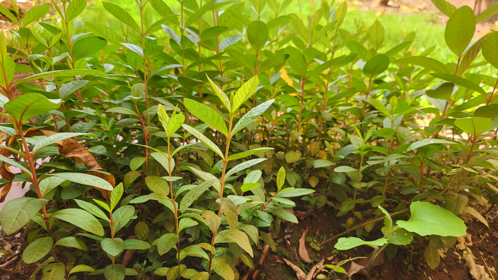
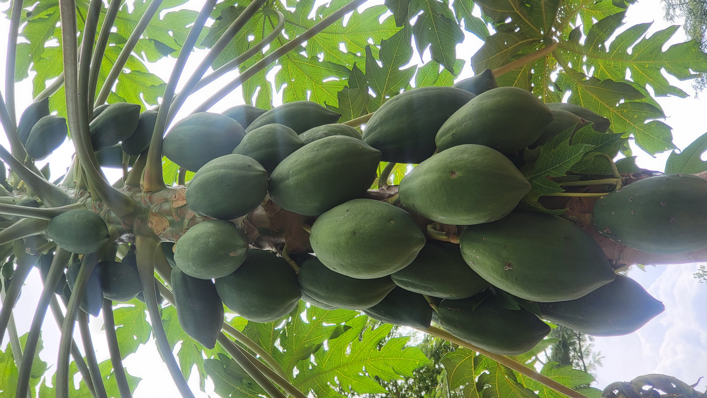
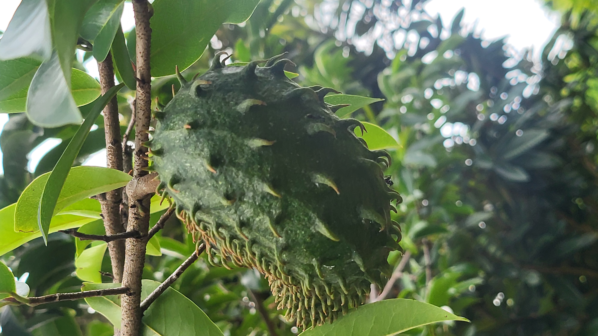
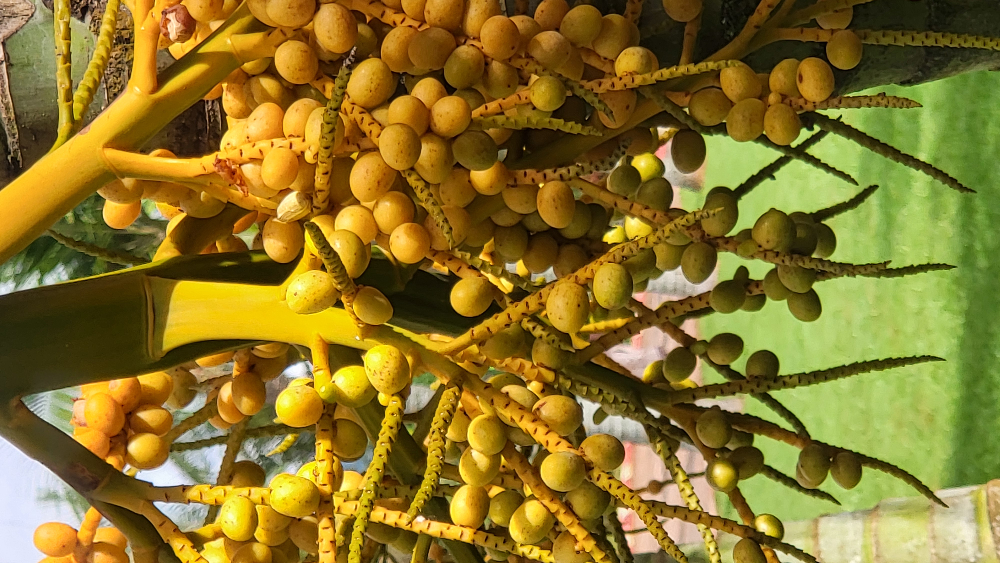
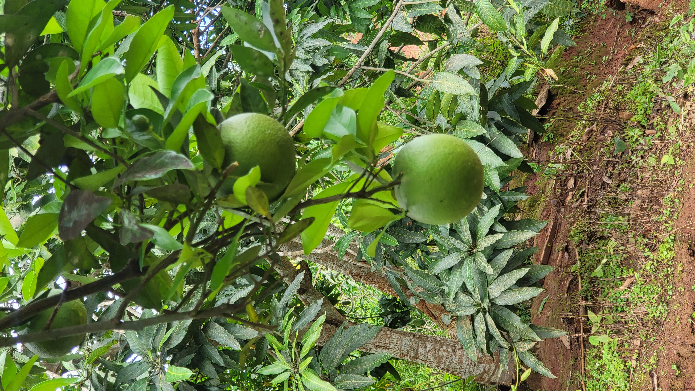
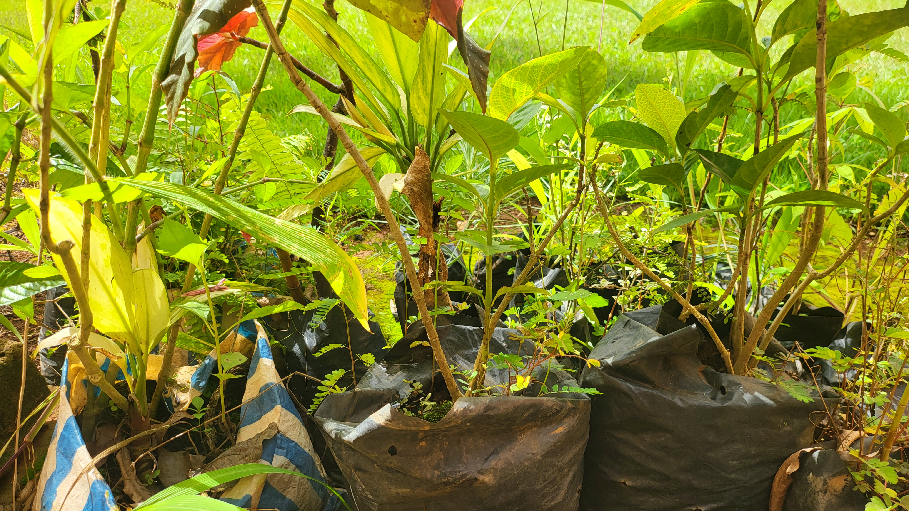

Gardiens des Forêts du Bassin du Congo
Chaque arbre planté est une promesse faite à la terre. BACOFAFL œuvre chaque jour pour protéger les forêts tropicales du Cameroun et la biodiversité qu'elles abritent.

Nourrir les Communautés, Respecter la Nature
L'agroforesterie associe cultures vivrières et arbres forestiers pour créer des écosystèmes productifs et résilients qui profitent aux familles et à l'environnement.

Un Cameroun Vert, un Avenir pour Tous
De Yaoundé aux forêts du Bassin du Congo, nous documentons, protégeons et restaurons les écosystèmes naturels du Cameroun pour les générations futures.
Conservation Forestière
Protection active des forêts primaires et secondaires
Agroforesterie Durable
Cultures vivrières intégrées aux systèmes forestiers
Préservation de la Biodiversité
Documentation et protection des espèces menacées
Gestion des Ressources en Eau
Irrigation durable et protection des bassins versants

Bureau Africain de Conservation des Forêts & d'Agroforesterie
Fondé dans le cœur du Bassin du Congo, BACOFAFL est une organisation camerounaise qui allie conservation de la nature et développement agricole durable. Nous accompagnons les communautés rurales dans la transition vers des pratiques agroforestières qui protègent la forêt tout en assurant la sécurité alimentaire.
Nos équipes travaillent sur le terrain chaque jour — plantant des arbres, documentant la faune, gérant des pépinières et formant les agriculteurs aux techniques durables.
Pépinières Communautaires
Production et distribution de jeunes plants d'espèces locales et fruitières
Recherche & Documentation
Inventaires floristiques et faunistiques des écosystèmes locaux
Formation des Agriculteurs
Ateliers pratiques sur l'agroforesterie et la gestion durable des terres
Gestion de l'Eau
Canaux d'irrigation et protection des sources et rivières
Actions sur le Terrain
De la forêt profonde aux champs cultivés, nos projets couvrent tous les aspects de la conservation et du développement durable au Cameroun.
 Agroforesterie
Agroforesterie
Cacao Agroforestier
Intégration du cacao sous couvert forestier pour une production durable qui préserve la biodiversité et améliore les revenus des producteurs.
Lire la suite →
ReboisementPépinières Forestières
Production de dizaines de milliers de jeunes plants d'espèces locales chaque année pour reboiser les zones dégradées et enrichir les forêts existantes.
Lire la suite → Eau & Sols
Eau & Sols
Gestion des Bassins Versants
Aménagement de canaux d'irrigation, protection des sources et gestion durable des ressources en eau pour les communautés agricoles.
Lire la suite →La Nature en Images
Des forêts du Bassin du Congo aux pépinières communautaires — chaque photo raconte notre engagement pour la nature.





Dernières Nouvelles du Terrain
Suivez nos activités et les avancées de nos projets de conservation au Cameroun.

Distribution de 5 000 Jeunes Plants aux Agriculteurs
Notre pépinière a produit et distribué 5 000 plants d'espèces fruitières et forestières aux familles partenaires de la région de Yaoundé.

Récolte Record de Manioc pour les Familles Partenaires
Grâce aux techniques agroforestières enseignées par BACOFAFL, les familles partenaires ont doublé leur production de manioc cette saison.
Découverte de Colonies de Tisserins dans nos Zones Protégées
Les inventaires biologiques de mars 2026 ont révélé la présence de plusieurs colonies de tisserins, indicateurs d'un écosystème en bonne santé.
La Forêt a Besoin de Vous
Votre soutien permet à BACOFAFL de continuer à planter des arbres, former des agriculteurs et protéger la biodiversité unique du Bassin du Congo.